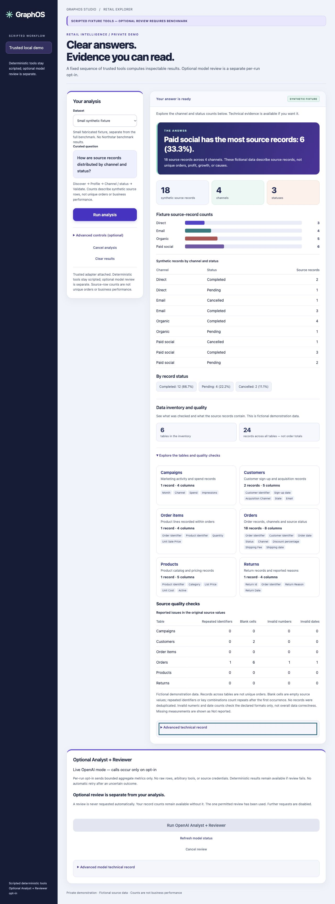

Profile the source
Inventory tables and columns, verify source hashes, and report empty cells, repeated keys, and numeric/date-format issues while preserving the original records.
Analytics engineering · Independent portfolio project
A Python workflow that turns fictional retail records into clear, independently checked results, with data-quality evidence and saved-run history.
The analytical question
GraphOS brings discovery, profiling, calculation, and independent validation into a fixed local workflow. The Northstar Direct fictional retail benchmark supplies six related CSV tables: customers, products, orders, order items, campaigns, and returns.
The completed demo focuses on two useful tasks: channel/status counts and cancellation-record shares. Results appear with readable tables, charts, definitions, and optional technical evidence.
Demonstrated output
For August 2026, the benchmark produces the following descriptive shares. Each denominator is the number of source order records for that channel and month; the numerator is the number marked cancelled.
| Channel | Cancelled records | Source records | Cancellation share |
|---|---|---|---|
| Marketplace | 59 | 208 | 28.4% |
| Mobile | 107 | 483 | 22.2% |
| Web | 209 | 801 | 26.1% |
Marketplace has the highest observed share in this month. This provides a starting point for investigation; it does not establish why cancellations occurred.
Metric scope: The benchmark retains 35 order records that repeat a declared business key. These are source-record shares, rather than unique-order rates, refunds, financial losses, or evidence of a real retailer’s performance.
Workflow & engineering
Inventory tables and columns, verify source hashes, and report empty cells, repeated keys, and numeric/date-format issues while preserving the original records.
Use separate parsing and counters to check group counts, totals, dates, and shares before presenting a successful result.
Lead with a concise result, then expose the table, chart, metric definitions, quality evidence, and technical record through progressive disclosure.
Save bounded analysis receipts in a hash-chained journal. Reopen archived results read-only, with separate backup and restore-copy checks.
A separately bounded optional Analyst/Reviewer model pair completed once using aggregate metrics. Core calculations remain deterministic and scripted. This demonstrates a narrow review integration rather than a general autonomous analytics platform.
Evidence & interface
The retained November 3 acceptance record documents reconciliation of all 60 groups, saved-result reopening after restart, a real backup with a separate restore copy, and served-browser checks at 390px and 1280px. A later source candidate records 150 passing Python tests and 41 JavaScript checks; its activation remained pending at the reviewed checkpoint.

Remaining work: Full native keyboard and screen-reader acceptance, broader analytical workflows, operational recovery, and deployment controls remain open. The public case study summarizes retained local evidence; it does not provide a live app or a standalone GraphOS source repository.